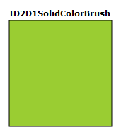

To create a solid color brush, use the ID2DRenderTarget::CreateSolidColorBrush method and specify the color with which you want to paint. Some of the CreateSolidColorBrush overloads also enable you to specify the opacity of the brush.
The following code shows how to create a solid yellow-green brush to fill a square, and a solid black brush to draw the outline of the square. The code produces the output shown in the following illustration.

Declare two ID2D1SolidColorBrush pointers: one for painting black and one for painting yellow green.
ID2D1SolidColorBrush *m_pBlackBrush;
ID2D1SolidColorBrush *m_pYellowGreenBrush;
Call the CreateSolidColorBrush method to create the brushes:
if (SUCCEEDED(hr))
{
hr = m_pRenderTarget->CreateSolidColorBrush(
D2D1::ColorF(D2D1::ColorF::Black, 1.0f),
&m_pBlackBrush
);
}
// Create a solid color brush with its rgb value 0x9ACD32.
if (SUCCEEDED(hr))
{
hr = m_pRenderTarget->CreateSolidColorBrush(
D2D1::ColorF(D2D1::ColorF(0x9ACD32, 1.0f)),
&m_pYellowGreenBrush
);
}
Call the FillRectangle method to paint the interior of the rectangle with the yellow green brush and the DrawRectangle method to paint the outline of the rectangle with the black brush:
m_pRenderTarget->FillRectangle(&rcBrushRect, m_pYellowGreenBrush);
m_pRenderTarget->DrawRectangle(&rcBrushRect, m_pBlackBrush, 1, NULL);
Â
Â